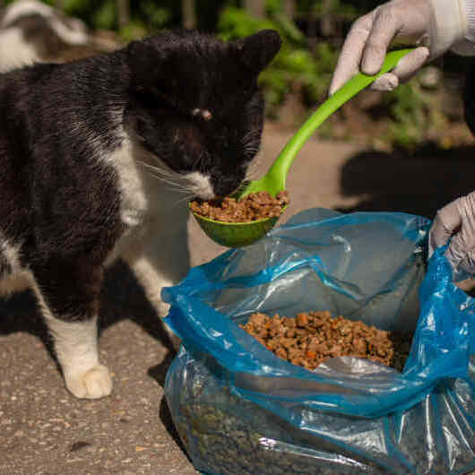

Conoce el origen de Colitas Felices Callao y el propósito que nos motivó a crear este proyecto.
Somos estudiantes del Instituto de Educación Superior Público Simón Bolívar, de la carrera de Desarrollo de Sistemas de Información. Como parte de nuestro aprendizaje, decidimos llevar nuestros conocimientos más allá del aula y convertir una idea de concientización en una página web.
Así nace Colitas Felices Callao, un proyecto creado por tres estudiantes que buscan utilizar la tecnología para transmitir un mensaje de respeto, responsabilidad y cariño hacia nuestras mascotas.
Queremos recordar que una mascota no es solo un animal de compañía. Es parte de nuestra familia, comparte nuestros días y nos brinda cariño, alegría y compañía sin pedir nada a cambio.
Por medio de esta página buscamos generar conciencia sobre el cuidado responsable, fortalecer el vínculo entre las personas y sus mascotas y, sobre todo, promover una cultura en la que abandonar nunca sea una opción.

Detrás de cada mascota que termina en las calles existe una historia. Muchos animales pasan de tener un hogar a enfrentarse al hambre, al frío, a las enfermedades y a la indiferencia.
Colitas Felices Callao nace con la intención de ayudar a cambiar esta realidad. Queremos que más personas comprendan que tener una mascota implica un compromiso para toda la vida: cuidarla, protegerla y permanecer a su lado.
EL ABANDONO NO DEBE SER EL FINAL DE SU HISTORIA.
NUESTRO EQUIPO
Detrás de esta iniciativa estamos tres estudiantes que decidimos convertir nuestros conocimientos en una propuesta que busca generar conciencia y dejar un mensaje positivo.
Una mascota no es solo compañía, es parte de la familia. Cuidemos, valoremos y protejamos a quienes siempre están a nuestro lado. 🐾❤️